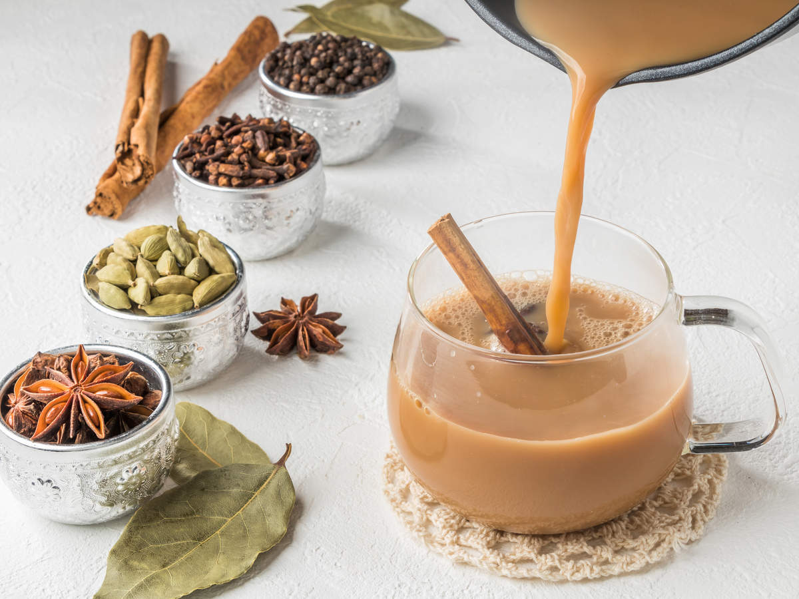

GINGER TEA
People have used ginger for thousands of years to treat ailments and add an earthy flavor with a spicy kick to their food. Ginger is native to Asia and belongs to the Zingiberaceae family of plants, and people typically use its edible root or stem.
It is also an ancient herbal remedy that people have used for a host of ailments, including arthritis, diabetes, cough, colds, and nausea (1Trusted Source).
Ginger is consumed in multiple ways in folk medicine, including in the form of ginger tea. You can make ginger tea by boiling the peeled root in water or milk.
ginger tea is made by boiling the peeled root in water or milk.

HERBAL TEA
Herbal teas, sometimes called tisanes, are very similar to white teas, but they contain a blend of herbs, spices, fruits or other plants in addition to tea leaves. Herbal teas don’t contain caffeine, which is why they’re known for their calming properties.
There are numerous types of herbal teas, all with their unique benefits. Some of the most popular herbal teas include:
Chamomile tea – Helps to reduce menstrual pain and muscle spasms, improves sleep and relaxation, and reduces stress
Rooibos – Improves blood pressure and circulation, boosts good cholesterol while lowering bad cholesterol, keeps hair strong and skin healthy, and provides relief from allergies

MASALA TEAMasala tea is extremely popular in India, owing to its taste and aroma. It is widely believed that one cup of masala tea can prevent various kinds of illnesses and keep you healthy. Masala tea is a mixture of several ingredients, including cardamom, ginger, cinnamon, black pepper, and cinnamon. Every manufacturer and tea connoisseur will have its blend of ingredients for masala tea, which means that no two cups of masala chai will be the same. That being said, the essential ingredients remain much the same.
Given its antioxidant properties, drinking Masala tea can be very good for elders. Masala tea lowers heart disease risk by reducing insufficient cholesterol levels in their bodies and beeping blood pressure. It helps to keep the heart healthy and fit.
Anxiety and stress are most common in elders. Regular consumption of Masala tea or black tea can reduce stress and help them stay happy and lead an anxiety-free life. Elders who drink a cup of Masala tea in a day are found more relaxed and calm than others.
For high bone density, elders should start consuming masala tea with milk. Adding milk with spices doubles the benefits for your health. Milk is rich in protein hence helps to give them bone strength. Masala tea is very beneficial for joint pains as well.
TANDOORI CHAI
Tandoori Chai (Kulhad Chai) is a delicious twist on the regular tea where Masala Chai is smoked by pouring it in a hot kulhad (clay mug).Whisk Affair » Recipes » Videos » Tandoori Chai
Tandoori Chai is your same old Masala Chai with a twist, that gives it a nice earthy and smoky flavor making it even more amazing. You can serve this quirky chai to your guests and surprise them with its unique clay pot flavor.
Tandoori Chai is actually a very traditional way of making tea which was almost forgotten. A cafe in Pune brought the method back into practice and soon it became an internet sensation.
It is traditionally made by warming the kulhad (clay mugs) in a tandoor until they are red hot and then pouring the masala chai in them, hence the name Tandoori Chai. The tea froth vigorously like a volcano once poured in the hot kulhad and gets infused with the smoky flavor in the process.